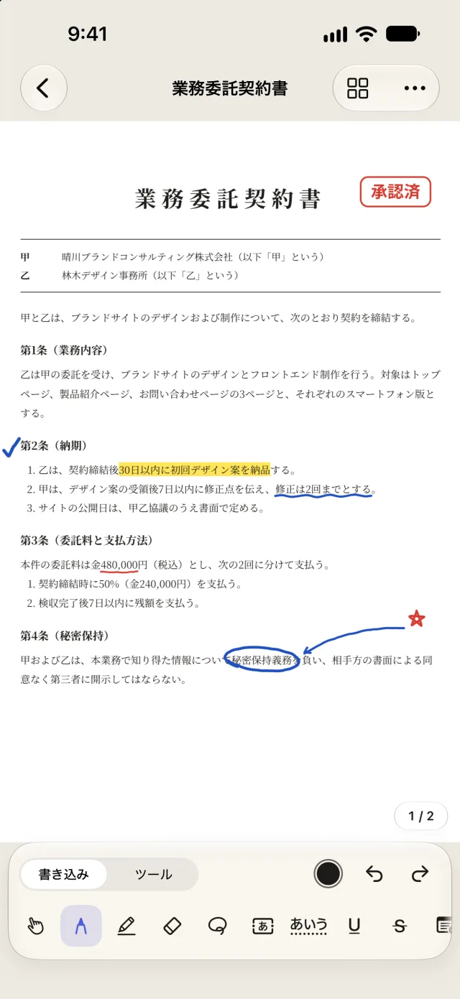
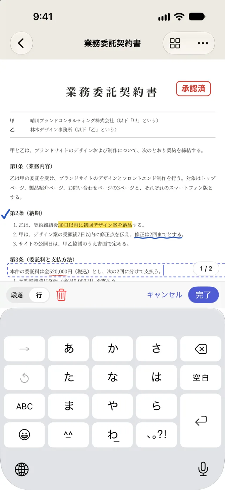
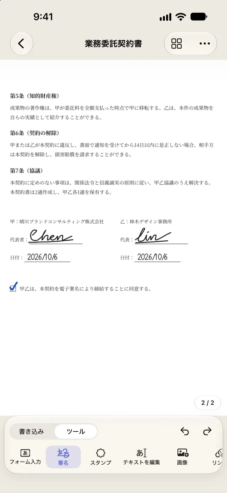
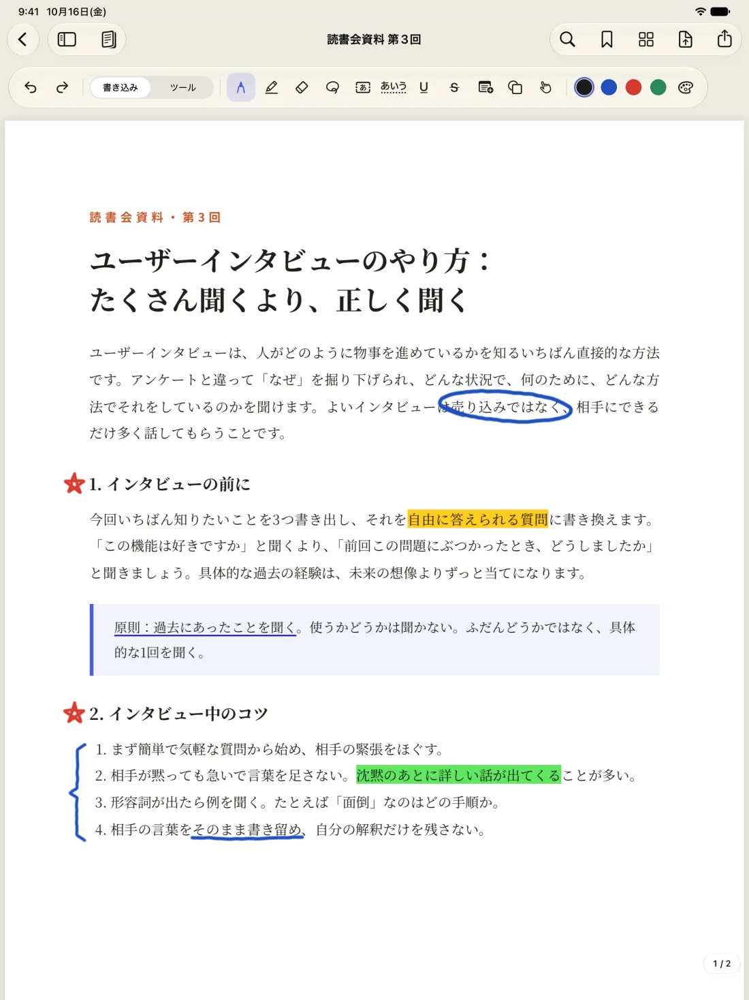
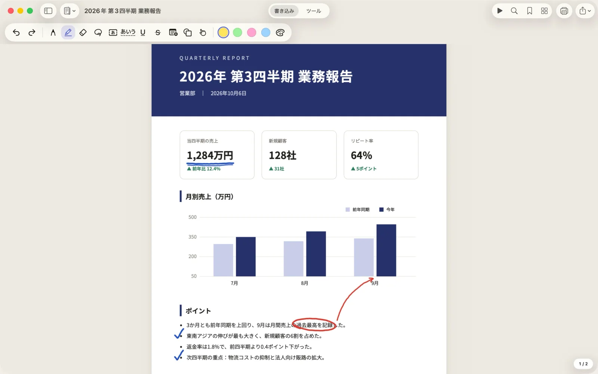

署名
指やApple Pencilで署名して保存しておけば、次からはタップひとつで配置できます。より正式な書類には、証明書による署名にタイムスタンプを付けることもできます。
iPhone・iPad・Mac
プロのソフトみたいに、どこでも直せる。
Foliumは、PDFの作業に必要な道具をひとつにまとめました。手書きのメモ、署名、フォーム入力、テキストの直接編集、スキャン、そしてWordやExcelへの変換まで。すべてお使いのデバイス上で完結するので、書類があなたの手元を離れることはありません。
毎日のPDF作業
3つも4つものAppを行き来して、ファイルを移す必要はもうありません。PDFを開けば、書き込みも署名も修正も、すべてひとつの場所で済みます。
指やApple Pencilで署名して保存しておけば、次からはタップひとつで配置できます。より正式な書類には、証明書による署名にタイムスタンプを付けることもできます。
フィールドのあるフォームは、そのまま入力するだけ。スキャンした、フィールドのないフォームでも、Foliumが枠や下線、チェックボックスを見つけてくれるので、ひとつずつ埋めていけます。
誤字を見つけたら、タップしてその場で直せます。元のWordファイルを探しに戻る必要はありません。画像の差し替えや挿入、文章の追加もできます。
ペン、蛍光ペン、テキストボックス、メモ、図形、スタンプで、思いどおりに書き込めます。描き終わりにペンを離さずに少し止めると、線や矢印、円、四角がきれいな形に整います。iOS 27以降では、手書きした内容も検索できます。
カメラで紙の書類をスキャンしてPDFにできます。テキスト認識をしておけば、スキャンした書類でも文字の検索、選択、コピーができます。
ページの並べ替え、回転、削除、挿入、結合のほか、別の書類から数ページをコピーしてくることもできます。iPadやMacでは、PDFや画像をドラッグするだけで新しいページとして挿入できます。
ほかにもWordやExcelへの変換、OfficeからPDFへの変換、墨消し、パスワードと権限、ページ番号と透かし、ページのトリミング、2つの書類の比較、ファイルの圧縮、一括処理とショートカット。
実際の画面
以下はすべてFoliumの実際の画面です。





ライブラリ
フォルダで分類して、「署名待ち」「完了」などのタグを付けられます。検索では、PDFの中の文字まで一緒に探します。フォルダはiCloud Driveにある本物のフォルダなので、「ファイル」AppやFinderでも同じように整理されて見えます。
フォルダの中にフォルダを作れます。ドラッグするか、メニューの「移動…」を選べば、複数の書類をまとめて移動できます。フォルダを削除しても、中の書類はひとつ上の階層に移るだけで、一緒に消えることはありません。
1つの書類に複数のタグを付けられ、色は7色から選べます。タグをタップすると、どのフォルダにあっても、そのタグが付いた書類がすべて表示されます。
PDFの中の文字、テキスト認識をしたスキャン、自分で追加したテキストボックスやフォームへの入力内容まで、まとめて検索します。結果をタップすると、そのページで書類が開きます。
Macではリスト表示に切り替えて、名前、変更日、ページ数、サイズで並べ替えられます。⌘Fを押せばすぐに検索できます。読み込んだばかりでまだ整理していない書類は、「未分類」にまとまっています。
フォルダ、タグ、検索は、すべて無料です。
3つのプラットフォーム
iPhoneでよくする作業ほど快適に。署名、フォーム入力、ちょっとした書き込み、1文字の修正をして、すぐに送り返せます。
Apple Pencilでノートを取ったり、添削したり、線を引いたり。2つの書類を並べて、片方を見ながらもう片方に書き込めます。
Macのために設計したメニュー、キーボードショートカット、複数のウインドウ。FinderからPDFを開いてそのまま編集すれば、自動で元のファイルに保存されます。大量の変換や結合もすばやくこなせます。
書類はあなた自身のiCloudで同期されます。Folium Proは一度購入すれば、3つのプラットフォームすべてで使えます。
プライバシー
Foliumは、あなたの個人データを収集、アップロード、共有しません。どの機能を使ったかも記録しません。
開いたらすぐに使えます。広告も、分析ツールも、トラッキングも一切ありません。
テキスト認識、手書き認識、ファイルの変換、テキストの編集は、すべてお使いのiPhone、iPad、Mac上で行われます。
書類はデバイス上か、あなた自身のiCloud Driveに保存されます。開発者があなたの書類を見ることはできません。
インターネットに接続するのは、デジタル署名のタイムスタンプと証明書の確認のときだけです。送信されるのはハッシュ値と証明書の情報で、書類の内容ではありません。
安心して編集
お金を払って使う方にとっていちばん大切なのは、書類が壊れないこと、なくならないこと。Foliumは、保存の仕組みからそのために設計しています。
読み込んだ元のPDFは、手を加えずにそのまま書類の中に保管されます。変更はすべて取り消せて、以前に保存したバージョンにも戻せます。
変更を元のファイルに保存するときは、Foliumが1ページずつ表示を照合し、画面で見ているとおりになっていることを確かめてから書き込みます。
デジタル署名済みのPDFでは、変更は必ずファイルの末尾に追加されます。署名したときの内容は1バイトも変わりません。
同じ書類を2台のデバイスで編集しても、iCloudで同期するときに両方の変更をまとめます。どちらか一方で上書きしてしまうことはありません。
プラン
書類の数は無制限、透かしも入りません。
サブスクなしの買い切りで、ずっと使えます。
1回の購入でiPhone、iPad、Macのすべてで使えて、「ファミリー共有」で家族とも共有できます。
返金を受けた場合でも、Proで行った変更はそのまま表示でき、元のファイルへの保存や書き出しもできます。書類が閉じ込められることはありません。
TestFlightパブリックベータ
まずiPhone、iPad、MacにAppleのTestFlight Appをインストールしてから、下のリンクから参加してください。定員は100人です。ベータ版での購入はすべてテスト用で、実際に請求されることはありません。
リンクを開いてまだ参加できないと表示されたら、Appleの審査中です。1〜2日後にもう一度お試しください。